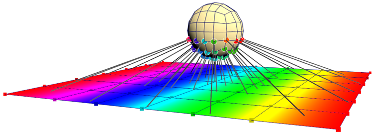
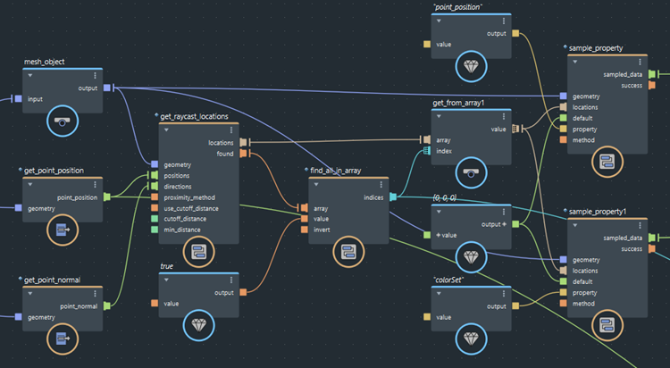

使用 get_raycast_locations 节点返回光线与网格的第一个交点的位置。然后，可以将这些位置与 sample_property 节点结合使用，以对定位、颜色、曲面法线等特性值进行采样。

在上面的示例中，光线从球的点定位沿其法线投射。如果光线投射到平面，则对插值顶点颜色进行采样。
要查找光线投射交点的位置并对其中的值进行采样，请执行以下操作：
将 get_raycast_locations 节点添加到图表中。
将要向其投射光线的目标对象连接到 geometry 输入。
将发出光线的源位置连接到 positions 输入。
将沿其投射每条光线的匹配方向连接到 directions 输入。
指定 proximity_method：
semi-line 沿方向向量射出无限长的光线。line 沿正和负方向向量射出无限长的光线。segment 沿方向向量射出光线，但光线长度仅为向量的长度。这允许每条光线有不同的距离，与 cutoff_distance 不同。根据需要，设置 use_cutoff_distance 和 cutoff_distance。使用时，将仅返回中止距离内的交点。如果除了 segment 方法之外还使用中止距离，则将针对每条光线分别使用较短的距离。
如果需要，将 min_distance 设置为非零值。这样可以防止返回的位置距离每个定位太近。在将光线从对象投射到自身时，这有助于避免始终返回输入位置。
使用 get_closest_locations 节点的输出对几何体上的特性值进行采样：
locations 输出连接到一个或多个 sample_property 节点，以立即对特性进行采样（请参见对位置的几何特性进行采样）。在这些情况下，您通常在连接到 get_closest_locations 节点的同一几何体上进行采样。found 输出与 if 节点结合使用，来控制图表中按光线进行的后续操作，包括是否对特性进行采样。